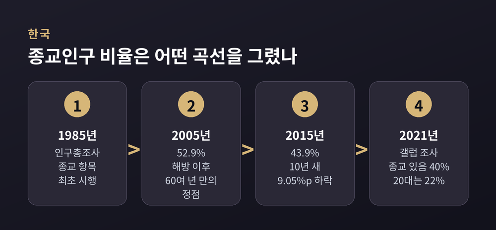

세 줄 요약
이번 글에서는 세속화 이론이 어디서 빗나갔고 어떻게 고쳐졌는지 정리해 보겠습니다. 어느 신앙이 옳은지를 따지는 글이 아닙니다. 사회과학이 자기 예측을 어떻게 수정해 왔는지 따라가 보는 자리입니다.
출발점은 막스 베버입니다. 그는 1917년 강연 「직업으로서의 학문」에서 이렇게 말했습니다. "우리 시대의 운명은 합리화와 지성화, 무엇보다 '세계의 탈주술화'로 특징지어진다."
탈주술화로 옮기는 독일어 Entzauberung은 문자 그대로 '마법을 걷어냄'입니다. 세계가 불가해한 신들과 영들이 다스리는 코스모스이기를 그치고, 계산으로 설명되는 장소로 바뀐다는 뜻입니다. 베버 자신의 표현을 빌리면 이렇습니다. "미개인처럼 영들을 부리거나 간청하기 위해 주술적 수단에 호소할 필요가 더는 없다."
다만 베버가 종교의 소멸을 예언했는지는 지금도 논쟁거리입니다. 그가 말한 것은 주술적 실천의 쇠퇴와 포괄적 의미체계의 상실이었다는 독해가 나란히 서 있습니다.
같은 시기 에밀 뒤르켐은 다른 각도에서 물었습니다. 1912년 『종교생활의 원초적 형태』에서 그가 본 종교의 본질은 사회적 응집이었습니다. 의례와 공유된 믿음이 집합의식을 만들어 구성원을 묶는다는 것입니다. 베버가 '합리화가 종교적 권위를 침식한다'는 쪽을 보았다면, 뒤르켐은 '종교 제도가 약해지면 그 기능은 어디로 가는가'를 물은 셈입니다.
두 사람의 통찰이 20세기 중반에 하나의 공식으로 굳었습니다. 근대화되면 종교가 쇠퇴한다. 1960년대 사회학에서 이 명제는 거의 자명한 것으로 취급되었습니다.
가장 상징적인 장면은 피터 버거에게서 나왔습니다.
버거는 1967년 『성스러운 덮개』에서 종교가 제공하던 '성스러운 덮개'의 붕괴가 신앙의 위기를 낳는다고 논했습니다. 당시 그는 세속화론의 열성적 옹호자였습니다.
그리고 1999년, 『세계의 탈세속화』 서문에서 이렇게 씁니다.
"우리가 세속화된 세계에 살고 있다는 가정은 틀렸다. 오늘의 세계는 그 어느 때 못지않게 맹렬히 종교적이다."
'탈세속화(desecularization)'라는 용어 자체가 이 책에서 만들어졌습니다. 근대화가 오히려 종교를 강화하는 경우가 더 많다는 것이 책의 골자입니다.
한계도 함께 적어야 공평하겠습니다. 버거의 급선회를 문제 삼는 학자들이 있습니다. 가장 무거운 비판은, 이 책이 종교 부흥이라는 현상의 이론적 동학을 설명하려 시도하지 않았다는 지적입니다. 예측이 틀렸다는 선언과 왜 틀렸는지에 대한 설명은 다른 일입니다.
수정 작업의 가장 중요한 분수령은 호세 카사노바의 1994년 저작 『근대 세계의 공적 종교』였습니다.
그는 고전 세속화 이론이 사실은 서로 다른 세 명제의 묶음이었음을 보였습니다. 종교 영역이 정치·경제·과학에서 기능적으로 분리되는 분화, 믿음과 실천이 줄어드는 쇠퇴, 종교가 사적 영역으로 밀려나는 사적화입니다.
핵심은 그다음입니다. 이 셋은 한 몸이 아닙니다. 서로 다른 수준에서, 다른 시점에, 어느 정도 독립적으로 작동합니다.
카사노바는 20세기 말 종교가 공적 영역으로 돌아오는 '탈사적화'를 강하게 논증했습니다. 그러니 세속화 이론이 빗나갔다는 말은 셋 다 틀렸다는 뜻이 아닙니다. 분화는 대체로 맞았고, 쇠퇴와 사적화는 지역마다 갈렸다는 뜻에 가깝습니다.
퓨리서치센터가 2025년 6월 발표한 보고서는 2,700개 이상의 자료원을 분석해 2010년부터 2020년까지의 변화를 추적했습니다.
2020년 기준 세계 인구에서 기독교인은 28.8%였습니다. 10년 전보다 1.8%포인트 줄었습니다. 무슬림은 25.6%, 무종교인은 24.2%로 세계 3위 집단이 되었습니다. 가장 빠르게 성장한 쪽은 무슬림이었습니다. 증가 폭은 자료에 따라 3억 2,700만 명에서 3억 4,700만 명 사이로 보도됩니다. 어느 쪽이든 다른 모든 종교를 합친 것보다 큽니다.
여기까지만 보면 세속화가 진행 중인 듯합니다. 그런데 같은 기관의 장기 전망은 반대 방향을 가리킵니다. 무종교인 비중이 2010년 16%에서 2050년 13%로 떨어진다는 것입니다. 이유는 단순합니다. 무종교인은 전 지구적으로 고령이고 출산율이 낮습니다.
지역별로 보면 무게중심의 이동이 더 뚜렷합니다. 세계 기독교인 가운데 사하라 이남 아프리카 거주자 비중은 2015년 26%에서 2060년 42%로 늘어날 전망입니다. 같은 지역 기독교 인구는 2010년 5억 1,700만 명에서 2050년 11억 명으로 두 배가 됩니다.
이 뒤엉킨 데이터를 가장 깔끔하게 정리한 것이 피파 노리스와 로널드 잉글하트의 『성스러운 것과 세속적인 것』입니다. 세계가치관조사 1981~2001년 자료가 근거였습니다.
두 사람이 제시한 변수는 근대화가 아니라 '실존적 안전'이었습니다. 생존이 당연하게 여겨지는가, 아닌가입니다.
발견은 두 갈래로 나뉩니다. 선진 산업사회 대중은 지난 반세기 동안 실제로 더 세속적인 방향으로 이동했습니다. 그러나 세계 전체로 보면 전통적 종교관을 가진 사람이 그 어느 때보다 많습니다. 종교성은 취약한 인구집단에서, 특히 빈국과 실패국가에서 가장 강하게 남습니다.
두 사실을 잇는 고리가 출산율입니다. 가난한 사회에서 종교성은 가족 형성을 지지하며 출산율을 높입니다. 반면 부유한 사회에서는 그 효과가 다르게 작동합니다.
그래서 이런 일이 벌어집니다. 개인 단위로는 세속화가 진행되는데, 인구 단위로는 종교인이 늘어납니다. 예전에는 이 둘이 모순으로 보였습니다. 지금은 같은 원리의 두 얼굴로 읽습니다.
1980년대에는 전혀 다른 각도의 수정안이 나왔습니다. 로드니 스타크와 로저 핑키, 윌리엄 심스 베인브리지, 경제학자 로런스 이안나코네가 제시한 종교시장 이론입니다.
전제는 이렇습니다. 초자연적 믿음에 대한 수요는 기본적 인간 욕구를 충족하므로 안정적입니다. 변하는 것은 공급입니다.
다원적 종교 경제가 종교에 가장 비옥한 환경이라는 결론이 여기서 나옵니다. 누구나 자기에게 맞는 신앙을 찾을 수 있고, 경쟁이 종교 공급자를 열심히 일하게 만든다는 것입니다. 이 틀에서 미국의 높은 종교성은 예외가 아니라 자유로운 시장의 결과이고, 유럽의 낮은 종교성은 국교회 독점이 만든 공급 실패가 됩니다.
물론 반론이 만만치 않습니다. 종교 선택을 비용과 편익의 계산으로 환원한다는 점, '경제 제국주의'가 종교 연구까지 점령한다는 비판이 대표적입니다.
그레이스 데이비는 세 개의 개념으로 유럽을 다시 읽었습니다.
첫째는 '믿되 소속되지 않기'입니다. 1994년 『1945년 이후 영국의 종교』에서 그는 교회 출석 감소가 믿음의 소멸이 아니라 믿음을 표현하는 방식의 변화와 짝을 이룬다고 보았습니다.
둘째는 '대리 종교'입니다. 이제 소수만 예배를 수행하지만, 그 수행을 다수가 승인합니다. 교회는 우리 모두를 대신해 공적 기능을 맡는 기관으로 남습니다.
셋째가 '유럽 예외주의'입니다. 근대 유럽의 세속적 문화는 유럽이 근대적이 되어서가 아니라 유럽적이기 때문에 그렇다는 주장입니다. 미국과 라틴아메리카, 사하라 이남 아프리카에는 세속화 없는 근대화의 증거가 상당하다는 것이 근거입니다.
데이터도 이 독법을 어느 정도 뒷받침합니다. 퓨리서치센터가 2018년 서유럽 15개국을 조사한 결과, 이탈리아를 뺀 모든 나라에서 비실천 기독교인이 실천 기독교인보다 많았습니다. 예배에 참석하는 기독교인은 전체 인구의 약 18%였습니다. 핀란드는 실천 9%에 비실천 68%, 스웨덴은 실천 9%에 비실천 43%였습니다. 그러면서도 종교를 묻는 질문에는 독일 71%, 프랑스 64%가 여전히 기독교인이라고 답했습니다.
유럽에서 옅어진 것은 믿음 자체라기보다 제도적 실천과 소속에 가깝습니다.
찰스 테일러는 2007년 『세속 시대』에서 논쟁이 오래 헛돈 이유를 짚었습니다. 서로 다른 세 가지를 한 단어로 부르고 있었다는 것입니다.
세속성 1은 공적 생활의 영역들에서 종교가 차례로 축출되는 것입니다. 세속성 2는 믿음과 실천의 통계적 감소입니다. 세속성 3은 신에 대한 믿음이 자명하고 균질한 것이었다가 논쟁 가능한 여러 선택지 중 하나가 되는 상태입니다.
테일러가 진짜 문제로 본 것은 세 번째였습니다. 믿음의 양이 아니라 믿음의 조건이 바뀌었다는 진단입니다. 그가 '내재적 틀'이라 부른 세계관, 곧 초월적 설명에 기대지 않고 일상 경험을 조형하는 방식이 그 조건입니다.
같은 전환이 비교사회학에서도 일어났습니다. 모니카 볼랍자르와 마리안 부르하르트는 2012년 '다원적 세속성' 개념을 제안했습니다. 세속성이란 종교와 비종교를 나누는 서로 구별되는 형식들이며, 각각은 그 사회의 근본 문제와 연결된 '지도 이념'에 의해 정당화된다는 것입니다. 그러니 세속성은 양이 아니라 문화적 기반의 관점에서 분석되어야 합니다. 이 틀은 인도와 남아프리카공화국 같은 탈식민 맥락에 적용되어 검증되었습니다.
한국은 종교 자유를 인정하는 나라 가운데 종교인구 비율이 낮은 편에 속해, 연구자들에게 흥미로운 사례로 꼽힙니다.
통계청 인구주택총조사는 끝자리가 5인 해에 종교 항목을 조사합니다. 총인구 대비 종교인구 비율은 2005년 52.9%로 정점을 찍은 뒤, 2015년 43.9%로 떨어졌습니다. 10년 사이 9.05%포인트입니다. 무종교인 비율로 바꿔 말하면 47.1%에서 56.1%가 됩니다.
해방 이후 2005년까지 60여 년간 한국의 종교인구는 거의 폭발적으로 증가해 왔습니다. 그 흐름이 처음으로 방향을 바꾼 지점입니다.
연령대별 감소 폭이 특히 눈에 띕니다. 40대가 13.3%포인트로 가장 컸고 20대 12.8%포인트, 10대 12.5%포인트가 뒤를 이었습니다. 70세 이상은 4.8%포인트에 그쳤습니다. 40대 이하 전 연령대가 평균 이상으로 빠진 것입니다.
한국갤럽 조사도 같은 방향을 가리킵니다. 2021년 조사에서 종교가 있다는 응답은 40%였습니다. 1984년 44%에서 2004년 54%까지 올랐다가 내려온 수치입니다. 20대만 떼어 보면 2004년 45%, 2014년 31%, 2021년 22%로 내려갑니다.
두 조사는 방식이 달라 절대값을 직접 비교할 수는 없습니다. 다만 정점 시기와 하락 방향이 겹친다는 점에서 서로를 뒷받침합니다.
흥미로운 대목이 하나 더 있습니다. 2015년 조사에서 천주교 신자는 389만여 명으로 집계되었는데, 이 가운데 성당에 나오는 사람은 약 3분의 1이라는 분석이 나왔습니다. 소속은 유지하되 참석은 꺼리는 형태입니다. 데이비가 유럽에서 관찰한 양상과 겹쳐 읽을 여지가 있습니다.

한쪽 이야기만 하면 균형이 무너지겠습니다.
스티브 브루스와 데이비드 보아스는 2023년 논문 「세속화의 입증」에서 정면으로 맞섰습니다. 피터 브라이얼리의 추정을 인용해, 영국 기독교 교회 교인 수가 1970년 770만 명에서 2020년 390만 명으로 줄었다는 수치를 제시합니다. 50년 만에 거의 절반입니다. 두 사람의 결론은 세속화 접근을 지지하는 증거가 압도적이라는 것입니다.
미국 데이터도 단순하지 않습니다. 퓨리서치센터가 2025년 2월 발표한 조사에서 기독교인 비중은 2007년 78%에서 62%로 내려왔지만, 2019년 이후로는 안정적입니다. 무종교인 비중도 2007년 16%, 2014년 23%, 2023~24년 29%로 오르다가 정체에 들어섰습니다. 그런데도 연구진 자신은 앞으로 종교성이 더 낮아질 것으로 전망합니다. 세대 교체 때문입니다.
비판자들의 경고도 새겨들을 만합니다. 어떤 반증도 '일시적 이탈'로 재분류해 흡수하는 이론은 반증 불가능해질 위험이 있다는 것입니다.
정리하면 이렇습니다.
세속화 이론이 틀렸다기보다, 세계 전체가 하나의 곡선을 따라 움직인다고 가정한 것이 틀렸습니다. 근대화라는 단일 변수로 지구 전체의 종교 지형을 설명하려던 시도가 무리였던 것입니다.
그 자리를 여러 개의 변수가 나눠 가졌습니다. 실존적 안전, 종교 공급의 구조, 사회마다 다른 세속성의 형식, 그리고 인구학입니다.
"종교가 사라지는가"라는 물음은 이제 좋은 질문이 아닙니다. 남은 질문은 믿음의 조건이 어떻게 달라지는가입니다.
물론 이 수정본도 완결된 답은 아닙니다. 한국의 하락이 유럽형 경로인지 다른 무엇인지는 아직 열려 있습니다. 자료가 더 쌓여야 답할 수 있는 문제입니다.
다만 한 가지는 분명해 보입니다. 백 년 전의 예측이 어긋난 자리에서 학문이 한 일은 예측을 버리는 것이 아니라 질문을 다시 세우는 일이었습니다. 그 과정을 따라가는 것만으로도, 우리가 사는 시대를 조금 다르게 볼 수 있게 되지 않을까 싶습니다.